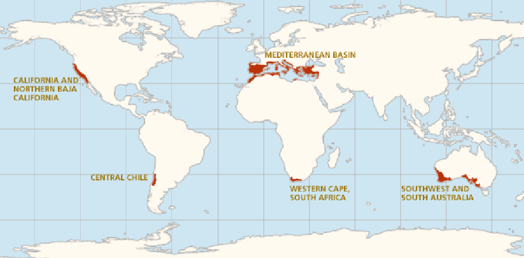
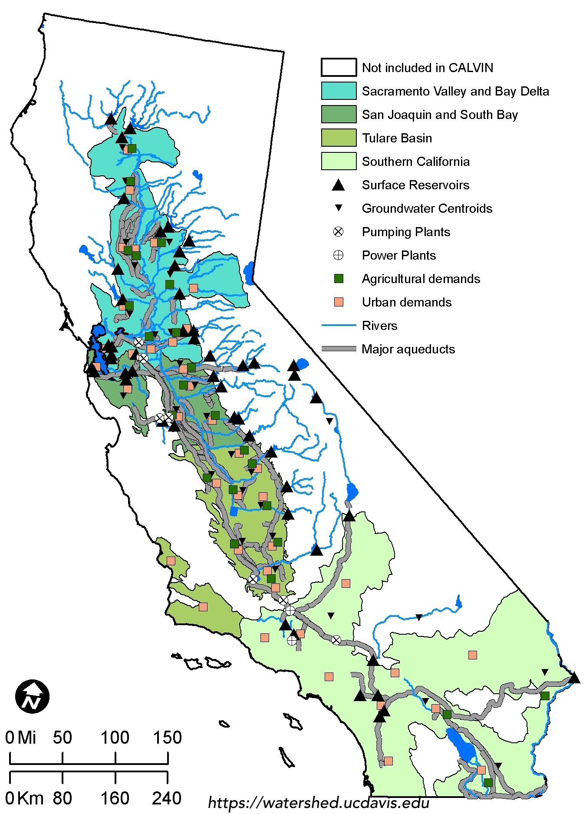
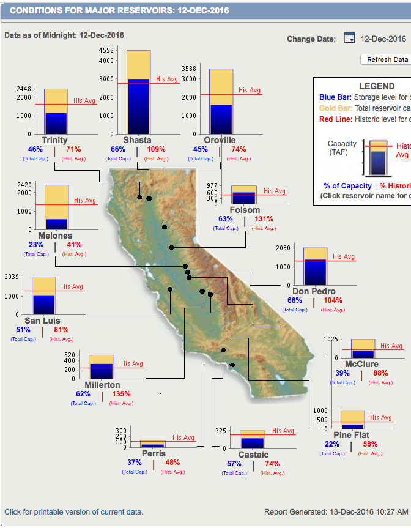

As a Californian, one may or may not think about where water comes from. Most people are taught about the water cycle of rain and snow and how they provide water for the state as a whole. However, not all of California has the same climate. Most of California has a mediterranean climate. A large proportion of Southern California naturally has semi-arid conditions while others are cooler and others are closer to dry deserts.
Almost all water is categorized into either groundwater and surface water. Groundwater comes from aquifers, which are sources of usable water that come from the ground. Groundwater rests in the pores of sediment and rocks underground. Surface water comes from different sources such as rain, rivers, and melted snowcaps.
Both groundwater and surface water are divided into the two same groups; freshwater, and saline water. Freshwater is the water that is usually usable for consumption or use. Saline water is another name for salt water. According to the U.S. Geological Survey data from 2010, about 33.4% of water was groundwater, whereas the rest was surface water. About 74% of surface water was fresh, with the rest being salt water. Also about 97% of groundwater was fresh water, with the rest being salt water. Due to the drought taking place from 2012-2017*, those numbers have most liked changed. 
As such, most of the conditions that Californians, especially Southern Californians, take for granted is the fact that there is a vast water infrastructure that provides water for millions of people. It is important for people to be aware that the water that Southern California naturally obtains is not enough to sustain the dense population. A lot of water in Southern California comes from Northern California.
According the Maven’s Notebook on California’s Water System, California has built a water delivery system that is one of the most extensive on planet Earth. It is capable of moving water from the Northern border to the Southern border. Through the process of developing the infrastructure, California has been able to distribute from multiple sources and projects. They are the Central Valley Project, State Water Project, The Colorado River, local streams and reservoirs, groundwater, and other major water systems according to the Water Education Foundation.
What most people do not know is that reservoirs can be either natural or artificial lakes used as a source of water. Some important reservoirs are listed with their respective data through this link provided by the Department of Water Resources. A more comprehensible way of interpreting the level of the reservoirs is through this section of the Department of Water Resources California Data Exchange center. It provides a once a day update on the level of water in the major reservoirs.
The above information is just the beginning. A significantly greater amount of information about infrastructure and projects can be provided by the following online resources: